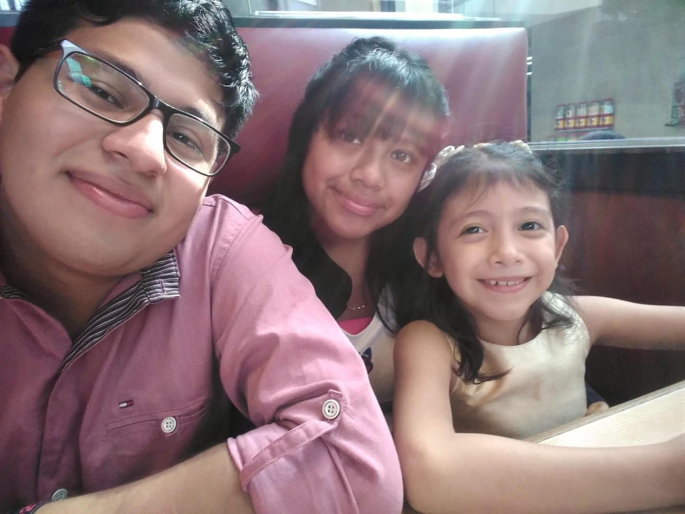

Validar si la contraseña y la repetición de la contraseña son iguales
Escribe una supuesta contraseña dos veces, una en cada campo, y pulsa el botón. Javascript te dirá si las dos son iguales.
Contraseña:
Repite contraseña:
